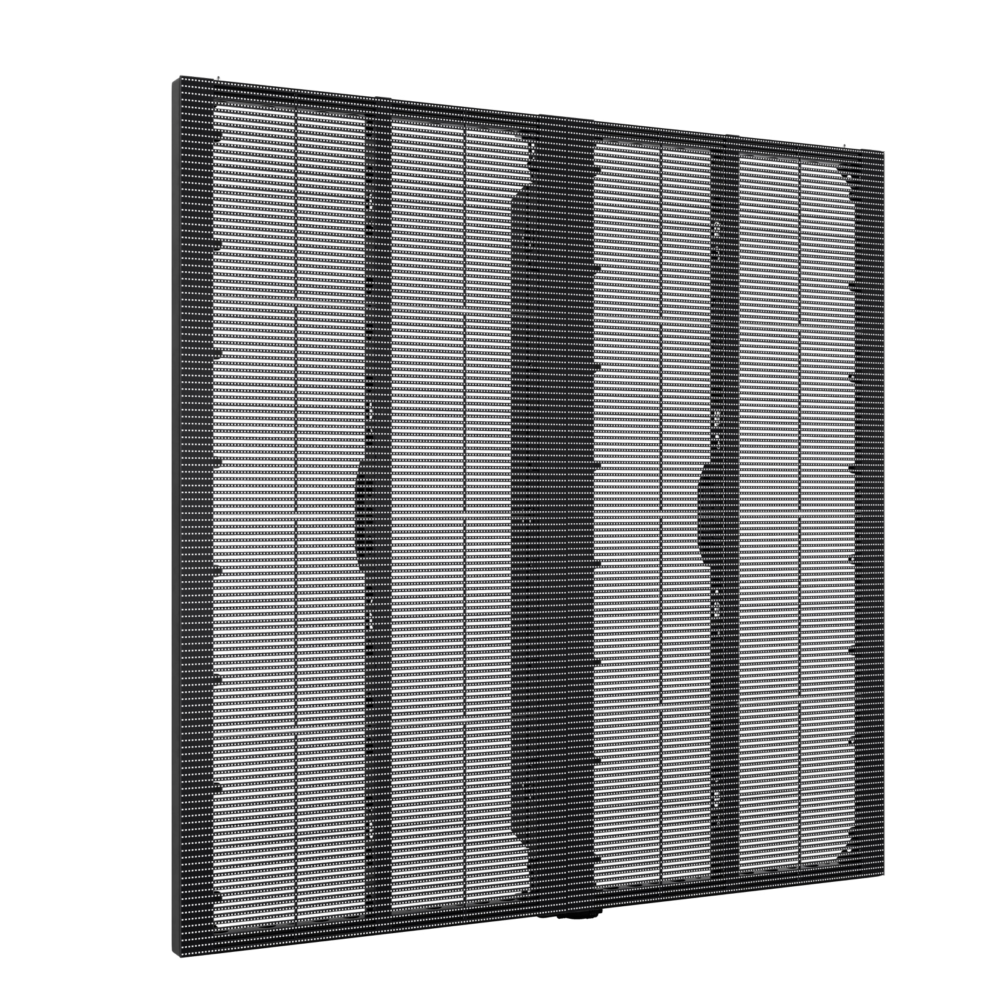
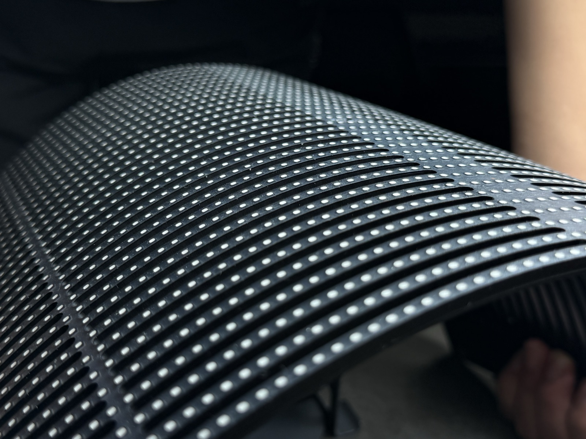
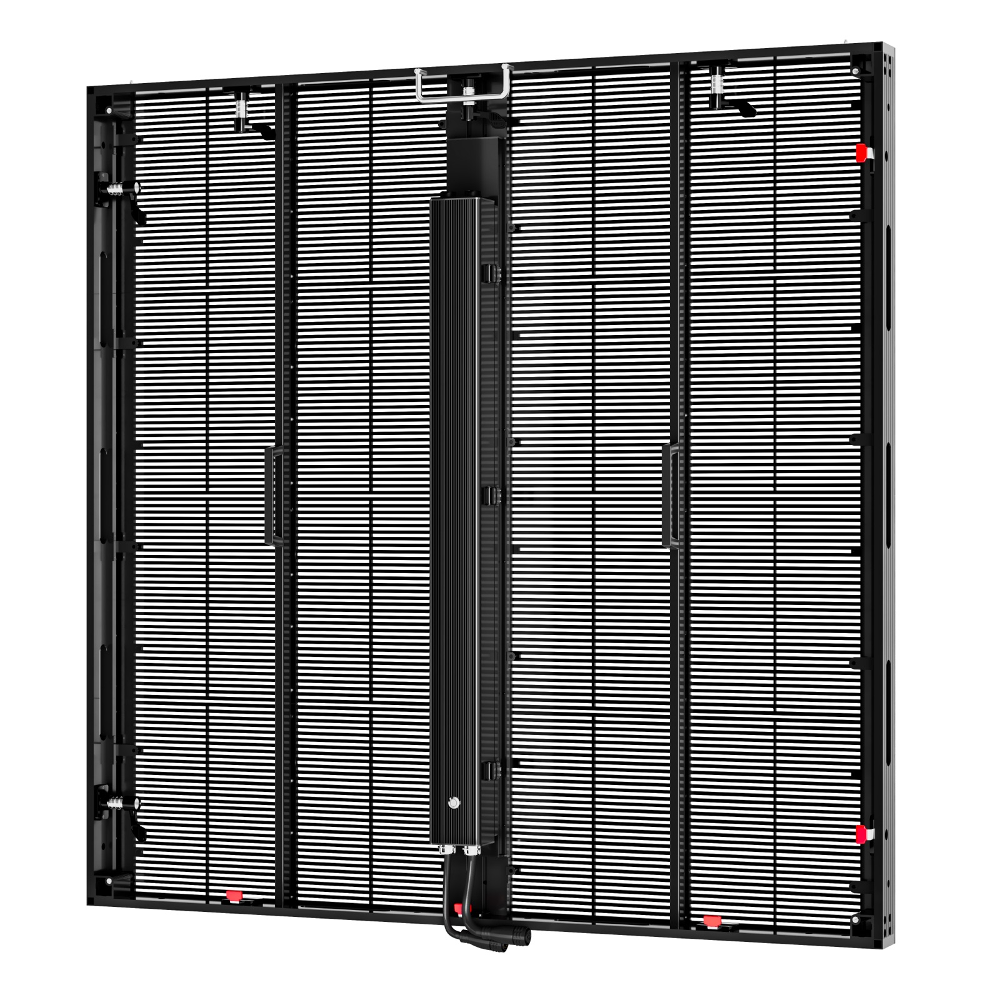
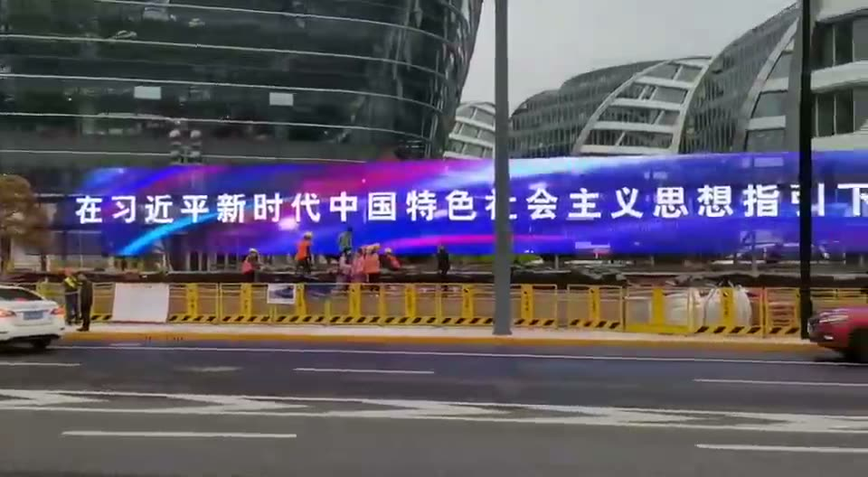
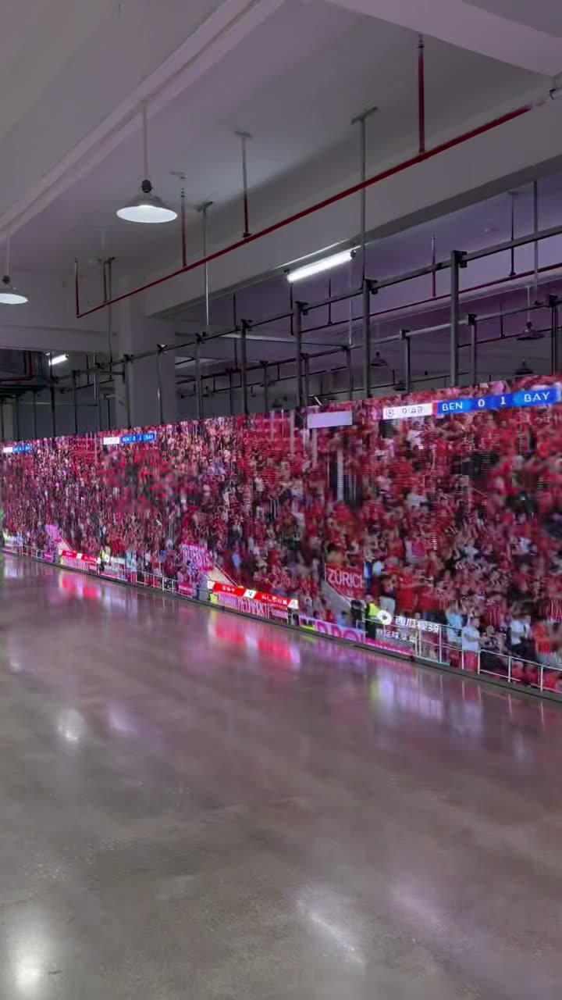
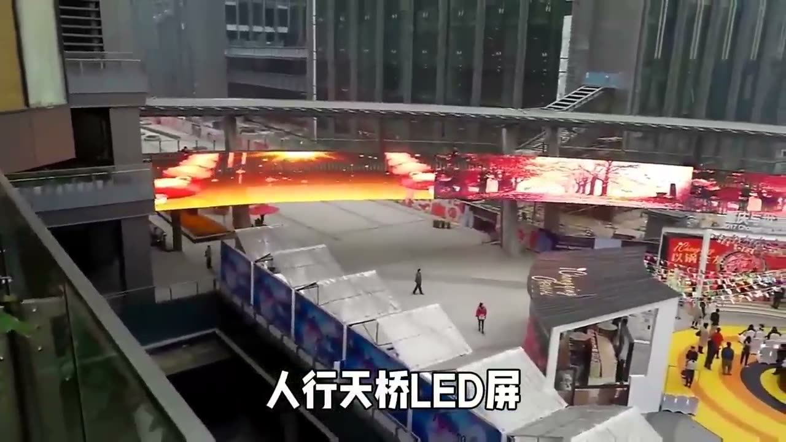
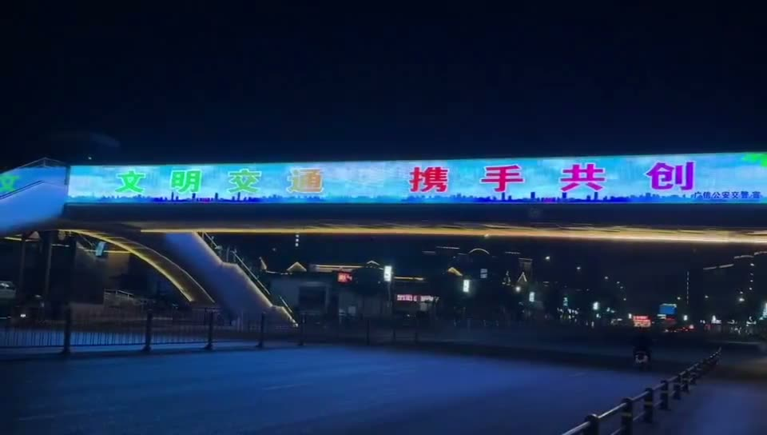
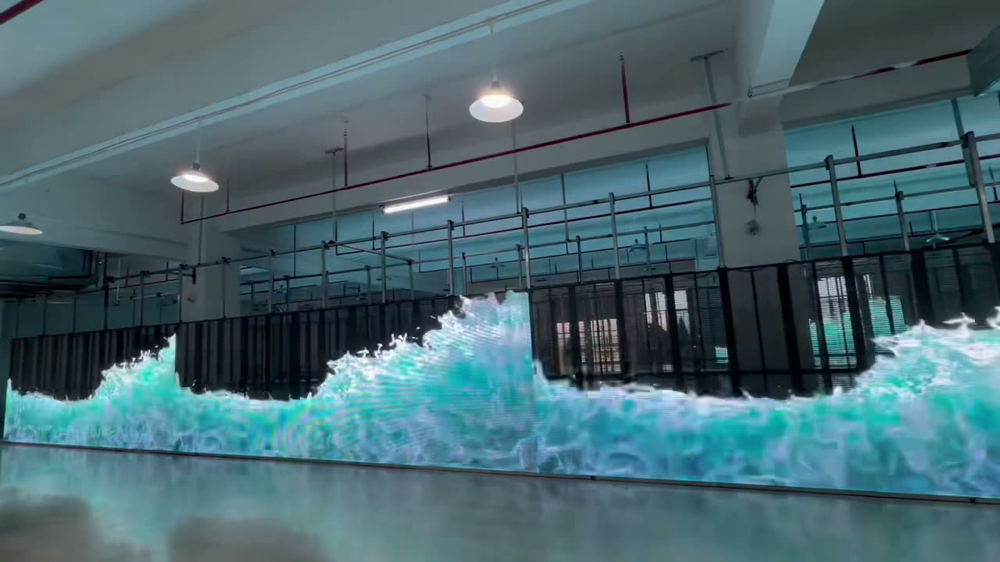
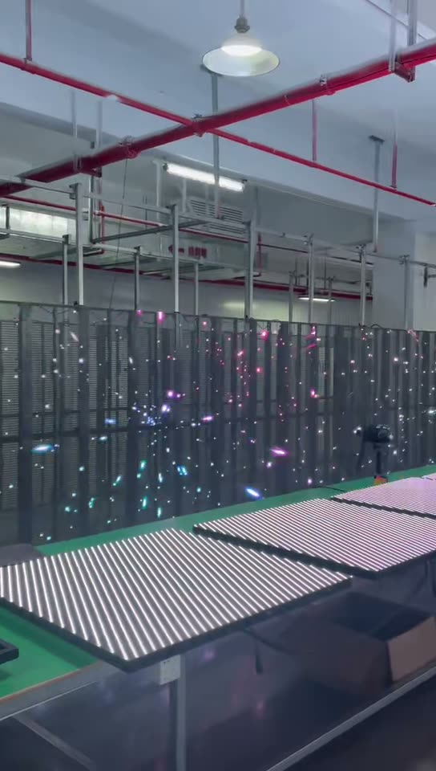

Прототип структуры и содержания одностраничного лендинга для компании «Хайнань Хэнпэн Международная Торговля». Цель по брифу: получать заявки на заказ светодиодных экранов. После утверждения прототипа следуют дизайн и разработка с управляемым контентом.
Каждый блок на лендинге подписан ярлыком в левом верхнем углу. Цвет ярлыка показывает, откуда взялся блок. Кнопка «Скрыть пометки» в верхней панели убирает ярлыки, «Управляемые поля» обводит всё, что клиент сможет менять в админке.
Порядок блоков сверху вниз. Заявку можно оставить в шести местах: форма на первом экране, кнопки «Рассчитать» в карточках, калькулятор, промежуточный призыв, форма в контактах, липкая панель на телефоне.
| # | Блок | Зачем | Источник |
|---|---|---|---|
| 1 | Шапка | Название, якорное меню, телефон, кнопка расчёта | Бриф + рекомендация |
| 2 | Первый экран | Предложение по головному запросу, регион, три факта, форма расчёта. Фон: видео шоурума клиента | Бриф + рекомендация |
| 3 | Полоса доверия | Четыре числа: объекты, м², год, реакция сервиса | Заполняет клиент |
| 4 | Типы экранов | Шесть карточек по применению с характеристиками и кнопкой расчёта. Фото и кадры видео клиента | Бриф + рекомендация |
| 5 | Реализованные объекты | Шесть видео из брифа с фильтром по типу | Из брифа |
| 6 | Что входит | Восемь пунктов состава услуги под ключ | Рекомендация |
| 7 | Как работаем | Пять этапов со сроками | Рекомендация |
| 8 | Стоимость и калькулятор | Ориентир «от» по площади и типу, ставки за м², кнопка точной сметы | Рекомендация |
| 9 | Шаг пикселя и расстояние | Таблица подбора, помогает сформулировать задачу | Рекомендация |
| 10 | О компании | Название из брифа, документы, склад, бригады. Фото производства клиента | Бриф + рекомендация |
| 11 | Отзывы | Три отзыва, формат; скрывается, если отзывов нет | Заполняет клиент |
| 12 | Промежуточный призыв | «Пришлите фото места установки» и телефон | Рекомендация |
| 13 | Вопросы и ответы | Семь вопросов: сроки, прозрачные экраны, зима, согласование, контент, гарантия, юрлица | Рекомендация |
| 14 | Контакты и форма | Иван Меньшов, телефон, почта, мессенджеры, карта, форма с вложением | Из брифа |
| 15 | Подвал | Название, реквизиты, ссылки, политика | Бриф + рекомендация |
| 16 | Липкая панель и модальное окно | «Позвонить» и «Получить расчёт» на телефоне, единая форма заявки по кнопкам | Рекомендация |
Требование брифа: контент должен быть управляемым. Ниже сущности для админки на этапе разработки. Каждое поле на лендинге помечено атрибутом data-cms, кнопка «Управляемые поля» в верхней панели лендинга подсвечивает их. Подробно с полями и типами: CONTENT-MODEL.md.
| Сущность | Тип | Поля | Где выводится |
|---|---|---|---|
| Настройки сайта | одиночная | название, логотип, телефон, email, режим работы, адрес, ссылки мессенджеров, реквизиты, ссылка на политику, счётчики аналитики | шапка, контакты, подвал, липкая панель, мобильное меню |
| Первый экран | одиночная | регион (бейдж), H1, подзаголовок, фоновое видео или фото, три факта (заголовок + подпись), тексты кнопок | блок 2 |
| Числа доверия | список | значение, подпись, порядок | блок 3 |
| Тип экрана | список | название, описание, фото, подпись к фото, до четырёх характеристик (название + значение), ставка за м², рекомендуемый шаг, ключ фильтра кейсов, порядок, показывать/скрыть | блок 4, калькулятор (ставки), фильтр кейсов, селекты форм |
| Кейс (объект) | список | название, описание, тип (ссылка на тип экрана), видео, превью, до трёх параметров (название + значение), порядок, показывать/скрыть | блок 5 |
| Пункт состава услуги | список | иконка, название, описание, порядок | блок 6 |
| Этап работы | список | номер, название, описание, срок, порядок | блок 7 |
| Настройки калькулятора | одиночная | доля монтажа от стоимости экрана, что не входит в ориентир, текст под ценой | блок 8 |
| Строка таблицы подбора | список | шаг пикселя, расстояние, применение, тип, яркость, порядок | блок 9 |
| О компании | одиночная | заголовок, два абзаца, фото, документы и факты (иконка + текст) | блок 10 |
| Отзыв | список | имя или компания, объект, текст, оценка, показывать/скрыть; блок скрывается при пустом списке | блок 11 |
| Призыв | одиночная | заголовок, текст, текст кнопки | блок 12 |
| Вопрос и ответ | список | вопрос, ответ, порядок, открыт по умолчанию | блок 13 |
| Заголовки разделов | по блоку | надзаголовок, заголовок, подзаголовок для каждого блока | все блоки |
| Формы и заявки | настройки + журнал | подписи полей, список типов экрана в селекте, текст согласия, текст подтверждения, адреса для писем; журнал заявок с вложениями | формы на первом экране, в контактах, в модальном окне |
Три фото и шесть видео. Видео сжаты до 1–6 МБ для прототипа, оригиналы у клиента. Два ролика с трассы содержат китайские надписи на экране, для боевого сайта лучше заменить их роликами с российских объектов или нейтральным контентом.









Яндекс Wordstat, регион Москва и Московская область, показов в месяц, снято 28.09.2026. Головной запрос вынесен в H1, остальные легли в названия типов экранов, калькулятор и таблицу подбора.
| Запрос | Показов/мес | Где на лендинге |
|---|---|---|
| светодиодный экран | 4 667 | H1, title |
| led экран | 4 228 | H1, название компании в шапке |
| медиафасад | 1 482 | карточка «Уличные экраны и медиафасады» |
| светодиодный экран купить | 317 | кнопки «Рассчитать», формы |
| аренда светодиодного экрана | 296 | не покрыт: аренда в бриф не входит, при желании отдельный блок |
| уличные светодиодные экраны | 232 | карточка «Уличные» |
| светодиодные экраны москва | 175 | бейдж региона, подзаголовки |
| светодиодный экран шаг | 164 | таблица подбора |
| размер светодиодного экрана | 140 | калькулятор |
| гибкий светодиодный экран | 113 | карточка «Гибкие» |
| светодиодный экран цена | 109 | блок «Сколько стоит» |
| светодиодные экраны для помещений | 104 | карточка «Интерьерные» |
| прозрачный светодиодный экран | 96 | карточка «Прозрачные», первая в списке: это основной продукт на фото |
| сколько стоит светодиодный экран | 78 | заголовок блока стоимости |
| монтаж светодиодных экранов | 56 | H1, блок «Что входит» |